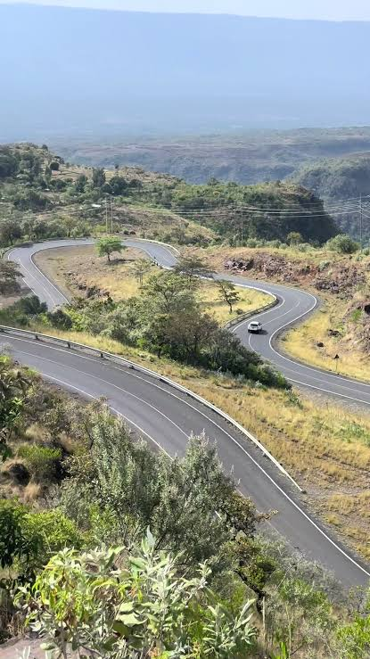

While You're in Iten
The viewpoint is just the beginning — the town has more to offer.

High Altitude Training Centre
Kenya's premier athletics training facility. Watch world-record holders train at dawn on the red-dirt tracks around town.

Biretwo Road Descent
From the viewpoint, the road winds down the escarpment to the valley floor — one of Kenya's great scenic drives and a legendary cycling challenge.

Iten Local Market
A lively highland market selling fresh produce, local honey, and traditional crafts. The best place to sample local food before or after your visit to the viewpoint.